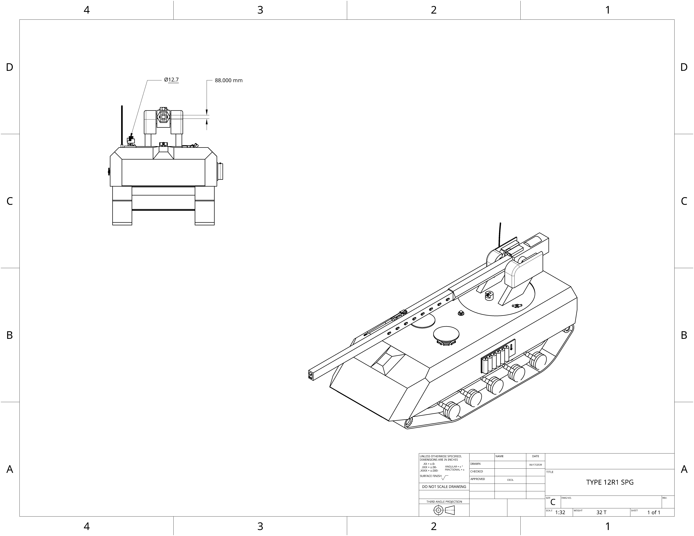

home
UCSC SPG:
UCSC self propelled gun, uses the UCSC infantry fighting vehicle chasis to give mobility to one of the most potent
anti armor railguns ever fielded.

- Main armament: UCSC Tac88 KineticLance
- Secondary armerment: .50 roof mount
- Shielding capabilities: X0.5 GiggaJoules
- Auxillary capabilities: Improved communication arrays, IR-Thermal smoke launchers
- Armor(Hull): Front-400mm,Sides-100mm,Back-60mm
- Speed: 125 Kph Forward 125 Kph Back
- Tonnage: 32 Metric tons